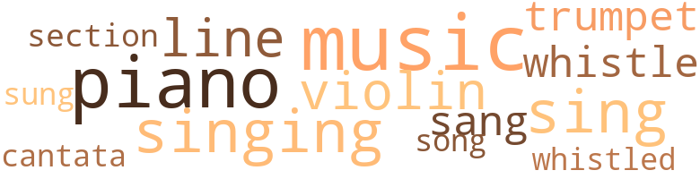
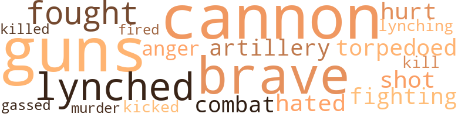

Music terms in the text
38 music-related terms matched in this text.
Most frequent terms in this topic: music (7); piano (6); sing (4); singing (4); line (3)

cantata.n.01
Definition: a musical composition for voices and orchestra based on a religious text
| word |
sentence |
| cantata |
It was playing the cantata , " Ruth , the Mloabitess , " Revella Hughes was singing the part of Ruth . |
cornet.n.01
Definition: a brass musical instrument with a brilliant tone; has a narrow tube and a flared bell and is played by means of valves
| word |
sentence |
| trumpet |
Suddenly a trumpet sounded . |
| trumpet |
" I know now why the prophet said that at the great judgment , Gabriel was going to put a foot on the sea when he got ready to blow the trumpet to arouse the dead . |
music.n.01
Definition: an artistic form of auditory communication incorporating instrumental or vocal tones in a structured and continuous manner
| word |
sentence |
| music |
Suddenly the music and the riotous shouts of the multitude burst forth , filling all the nooks and corners and sounding and resounding throughout the station . |
| music |
When they met , James was a Freshman in the school of Liberal Arts and Betty was a special student in music . |
| music |
She loved music and she played the piano with a gift that is seldom found among the great pianists of today . |
| music |
teach music in the London Institute at her home . |
| music |
She was playing to her own time , which was just a little slower than the written music . |
| music |
She was gazing out of the window with her head half turned in the direction in which the music came . |
| music |
The music of the victrolas had ceased . |
piano.n.01
Definition: a keyboard instrument that is played by depressing keys that cause hammers to strike tuned strings and produce sounds
| word |
sentence |
| piano |
She loved music and she played the piano with a gift that is seldom found among the great pianists of today . |
| piano |
Betty took a seat on the piano stool , opened the piano and began to play and sing : " God Will Take Care of You . " |
| piano |
Betty took a seat on the piano stool , opened the piano and began to play and sing : " God Will Take Care of You . " |
| piano |
Such playing suited her voice better , for it gave her time to inject notes which could not be made on the piano . |
| piano |
She kept her eyes fixed on the beautiful picture : " The Parable of the Sheepfold , " hanging on the wall just over the piano . |
| piano |
She went back to the piano and began to sing and play the other part of the song : " All you may need , He will provide , God will take care of you . |
section.n.01
Definition: a self-contained part of a larger composition (written or musical)
| word |
sentence |
| section |
A few moments dragged by , but neither the second section nor James came into sight . |
sing.v.02
Definition: produce tones with the voice
| word |
sentence |
| sang |
He recollected that when his mother was weighted with heavy troubles , she never sought her earthly friends , but she sang : " I have found a friend in Jesus He 's everything to me , He 's the fairest of ten thousand to my soul The Lily of the Valley in Him alone I see All I need to cleanse and make me fully whole . |
| sing |
Betty took a seat on the piano stool , opened the piano and began to play and sing : " God Will Take Care of You . " |
| sung |
Petty had sung the first two stanzas : " Bo not dismayed what ' er betide , God will take care of you , Beneath his wings of love abide , God will take care of you . |
| sing |
She went back to the piano and began to sing and play the other part of the song : " All you may need , He will provide , God will take care of you . |
| sing |
The folks and the autos were still pas - sing . |
| singing |
It was playing the cantata , " Ruth , the Mloabitess , " Revella Hughes was singing the part of Ruth . |
| sing |
Betty began to sing : " Entreat me not to leave thee ---- . " |
| sang |
semi and silvery tones , as it did when she sang in the chapel choir of New Orlenas Collegs . |
| singing |
Perced upon a nubby bough of a water oak , a mocking bird was singing its farewell evening ode . |
singing.n.01
Definition: the act of singing vocal music
| word |
sentence |
| singing |
Miss Hughes , singing in her soft soprano voice , was saying , " Entreat me not to leave thee , nor to return from following after thee . |
| singing |
Revella Hughes had stopped singing , but the violin was wailing louder than ever . |
song.n.01
Definition: a short musical composition with words
| word |
sentence |
| song |
She went back to the piano and began to sing and play the other part of the song : " All you may need , He will provide , God will take care of you . |
tune.n.01
Definition: a succession of notes forming a distinctive sequence
| word |
sentence |
| line |
He was waiting for orders to march in striking distance of the enemy 's line . |
| line |
When he arrived , he found his buddies hurriedly making packs , and getting ready to march in striking distant of the enemy 's line . |
| line |
He never had time to write his confession to Betty for he was in line when the orders were given to march . |
violin.n.01
Definition: bowed stringed instrument that is the highest member of the violin family; this instrument has four strings and a hollow body and an unfretted fingerboard and is played with a bow
| word |
sentence |
| violin |
James could not see the loyal act the female pigeon was doing for her mate , in fact he did not know that the pigeons were near by ; but he did hear the passionate plea , accompanied by a wailing violin , which Miss Hughes was making . |
| violin |
Revella Hughes had stopped singing , but the violin was wailing louder than ever . |
| violin |
Seemingly Betty was catching the words from the human like voice of the violin . |
whistle.n.01
Definition: the sound made by something moving rapidly or by steam coming out of a small aperture
| word |
sentence |
| whistles |
The whistles of the mills and factories were blowing ; the band was playing ; the bells were ringing ; the automobiles , parked upon the viaduct over the station , were " honking " and far up on Church Hill the sacred chimes of St. Peter 's Cathedral were pealing forth in sweet melodious tones : " God Be With You Till We Meet Again . " |
whistle.v.01
Definition: make whistling sounds
| word |
sentence |
| whistled |
Presently the train whistled ; the bell rang . |
| whistle |
JAMES WOUNDED IN BATTLE Suddenly he heard the whistle and the Sergeant 's command to " Fall out ! " |
Violence terms in the text
27 violence-related terms matched in this text.
Most frequent terms in this topic: guns (3); fought (2); cannon (2); brave (2); lynched (2)

anger.n.01
Definition: a strong emotion; a feeling that is oriented toward some real or supposed grievance
| word |
sentence |
| anger |
It seems to have been a tedious matter to decide whether she should give over to happiness or anger . |
cannon.n.04
Definition: heavy automatic gun fired from an airplane
| word |
sentence |
| cannon |
The towns are so close together that often a single cannon shot damages two towns and , in addition , put the inhabitants of the nearby ones to flight . |
| cannon |
He told of huge flames of fire , belching forth from the mouths of cannon and leaping high into the air . |
| cannons |
We captured twelve hundred prisoners , including a colonel and two of his staff officers , five cannons , sixty machine guns , a large number of small arms , and a large supply of munition . |
fight.n.02
Definition: the act of fighting; any contest or struggle
| word |
sentence |
| combat |
However , not for a great long time , because her ; persistent will , roughened from daily combat with the hardships of life , soon mastered the situation . |
fight.v.02
Definition: fight against or resist strongly
| word |
sentence |
| fought |
But we are soldiers true to the tradition of our fathers , who fought at the battle of Lake Erie , at New Orleans , at Fort Wagner , at San Juan Hill , and at Carraizal . |
| fighting |
You can , if you will , for your face tells me that you are made out of fighting material . " |
| fought |
" If I should leave you , James , as you have asked , just because you are not able to give me some of the luxuries of life , when you be - came disabled in the services of our country , I would be unworthy of the protection of the flag w ; hich you fought so courageously to defend . |
gas.v.01
Definition: attack with gas; subject to gas fumes
| word |
sentence |
| gassed |
Under their watchful care and in a short space of a day , James ' gassed eyes suddenly went out . |
gun.n.01
Definition: a weapon that discharges a missile at high velocity (especially from a metal tube or barrel)
| word |
sentence |
| guns |
He saw nothing but little bundles of cloud like smoke about the size of a football , appearing around the enemy 's airplane every time a shell , shot from the anti-craft guns , exploded ; and he heard nothing but the cool breezes whispering thru the branches of the trees . |
| guns |
We captured twelve hundred prisoners , including a colonel and two of his staff officers , five cannons , sixty machine guns , a large number of small arms , and a large supply of munition . |
| guns |
They gesticulated and used quite a few superlatives - " Most terrible , " " The largest guns , " " The worst gasses . " |
hate.v.01
Definition: dislike intensely; feel antipathy or aversion towards
| word |
sentence |
| hated |
And she hated the day when her club met at her humble home . |
kick_back.v.02
Definition: spring back, as from a forceful thrust
| word |
sentence |
| kicked |
And as she walked about the room , with an independent air , she kicked straight an upturned corner of the carpet , she straightened up a picture on the mantle , and when she passed before the mirror , she pushed a hair pin back into her silky black hair . |
kill.v.10
Definition: cause the death of, without intention
| word |
sentence |
| kill |
The boy did not kill him , but broke one of his wings . |
| killed |
Furniture Company , had shot and killed Ed . |
lynch.v.01
Definition: kill without legal sanction
| word |
sentence |
| lynched |
It acted as peculiarly that day , when those men offered their liver for their country , as it did on the day when Jesus Christ gave his life for the people who lynched him . |
| lynched |
And once with her fists clinched and her face determined , she said , " They ought to be lynched . " |
lynching.n.01
Definition: putting a person to death by mob action without due process of law
| word |
sentence |
| Lynching |
Lynching is not civilized folks method of revenge . " |
murder.n.01
Definition: unlawful premeditated killing of a human being by a human being
| word |
sentence |
| murder |
Unexpectedly he had been called as a defendant in a murder case . |
open_fire.v.01
Definition: start firing a weapon
| word |
sentence |
| fired |
When I had lost all hopes , and had given up all ambition , your advice was the match that re - kindled my last hope , and fired my amibtion as never before . |
pain.v.02
Definition: cause emotional anguish or make miserable
| word |
sentence |
| hurt |
When he led his class , she was the first to congratulate him , and when he failed on ex - animation , altho it hurt her to do so , she was the first to chide him . |
shoot.v.02
Definition: kill by firing a missile
| word |
sentence |
| shot |
One Friday evening , during a social , they were shot by the golden arrow of Cupid . |
torpedo.v.01
Definition: attack or hit with torpedoes
| word |
sentence |
| torpedoed |
We came so near being torpedoed that my hope of seeing you became as weak as a yarn string , and my belief of filling a watery grave as strong as cable . |
weapon.n.02
Definition: a means of persuading or arguing
| word |
sentence |
| artillery |
Every now and then the earth shook beneath him as the artillery about twenty kilometers away thundered out death and destruction and blasted well-laid plans of some struggling lover . |
weather.v.01
Definition: face and withstand with courage
| word |
sentence |
| brave |
Mother this is the brave little Betty of whom I have talked about daily . |
| brave |
James , be brave and courageous ! |
Religion terms in the text
52 religion-related terms matched in this text.
Most frequent terms in this topic: God (19); faith (3); chapel (3); Jesus (3); Christ (3)

blessing.n.05
Definition: the act of praying for divine protection
| word |
sentence |
| benediction |
The kiss came as the benediction , for directly afterward , the nurse entered the wad . |
cathedral.n.02
Definition: the principal Christian church building of a bishop's diocese
| word |
sentence |
| cathedrals |
He sent pictures of great cathedrals , and sacred paintings . |
chapel.n.01
Definition: a place of worship that has its own altar
| word |
sentence |
| chapel |
He admired her sweet soprano ' voice which ran like a silver thread among the many voices of the chapel choir . |
| chapel |
semi and silvery tones , as it did when she sang in the chapel choir of New Orlenas Collegs . |
chapel_service.n.01
Definition: a service conducted in a place of worship that has its own altar
| word |
sentence |
| chapel |
Long before that time , from sight acquaintance that is , that acquaintance common among boarding students from passing in the halls , from coming together during chapel service , and from strolling about the campus , they had grown to admire each other . |
church.n.04
Definition: the body of people who attend or belong to a particular local church
| word |
sentence |
| Church |
The whistles of the mills and factories were blowing ; the band was playing ; the bells were ringing ; the automobiles , parked upon the viaduct over the station , were " honking " and far up on Church Hill the sacred chimes of St. Peter 's Cathedral were pealing forth in sweet melodious tones : " God Be With You Till We Meet Again . " |
| churches |
As a friend , he eats at our table and chats by our fireside ; as a saint , he worships in our churches and tabernacles ; and as a citizen he has a voice in our government . |
confession.n.05
Definition: the document that spells out the belief system of a given church (especially the Reformation churches of the 16th century)
| word |
sentence |
| confession |
He never had time to write his confession to Betty for he was in line when the orders were given to march . |
creed.n.01
Definition: any system of principles or beliefs
| word |
sentence |
| creed |
Then , in a sing-song manner she repeated : " I will start anew this morning with a higher , fairer creed , I will cease to stand complaining of my ruthless neighbor 's greed ; I will look sometimes about me for the things that merit praise , I will search for hidden beauties that elude the grumbler 's gaze ; I will try to see the beauty spread before me rain or shine - I will cease to preach your duty and be more concerned with mine . " |
curate.n.01
Definition: a person authorized to conduct religious worship
| word |
sentence |
| pastor |
Our pastor will speak on ' What it Means to Go Over the Top . ' |
eden.n.01
Definition: any place of complete bliss and delight and peace
| word |
sentence |
| Heaven |
It was impossible for him to get it , for she was in Heaven and he was in Europe , somewhere in France in the edge of a wood hiding behind a tree and watching the enemys ' airplane soaring so high above him that had he not heard the double humming of the propellers , he would have thought it a bird . |
| Heaven |
He came in His own way , which is " as high above man 's ways as the Heaven is above the earth . " |
| heavens |
She can advise you as truly as I can , You will be successful , if you listen to Betty and take heed to these words : ' If the sun has hid its light , If the day has turned to night , If the heavens are benign , If the stars refuse to shine - Heart of man lost not they hope ; Door there 's none that shall not open ; Path there 's none that shall not clear Heart of man , why should ' st thou fear ? " |
god.n.03
Definition: a man of such superior qualities that he seems like a deity to other people
| word |
sentence |
| God |
Here and there , loud screams of heartbroken mothers , who could not bear to see their sons start upon such a crusade , though noble , yet fraught with such grave danger , rose above the shouting multitude high up into the calm air on their way to the altar of a merciful God . |
| God |
Be true to God and your country . |
| God |
Remember God seeth and know-eth everything . |
| God |
Seemingly he was trying to hear God speak in an audible voice from the quiet wood ; or see Him in some kind of visible form appear out of the vaulted blue skies . |
| God |
He believed in the miraculous power of God . |
| God |
For God who sayeth : " If you make one step toward me , I will make two toward you , " heard and came to his rescue . |
| God |
God spoke to him thru his mother , and she spoke thru a letter which he had received long before her death . |
| God |
Petty had sung the first two stanzas : " Bo not dismayed what ' er betide , God will take care of you , Beneath his wings of love abide , God will take care of you . |
| God |
Petty had sung the first two stanzas : " Bo not dismayed what ' er betide , God will take care of you , Beneath his wings of love abide , God will take care of you . |
| God |
Thru days of toil when heart doth fail , God will take care of you , When dangers fierce your path assail , God will take care of you . " |
| God |
Thru days of toil when heart doth fail , God will take care of you , When dangers fierce your path assail , God will take care of you . " |
| God |
She went back to the piano and began to sing and play the other part of the song : " All you may need , He will provide , God will take care of you . |
| God |
Nothing you ask will be denied , God will take care of you . |
| God |
No matter what may be the test , God will take care of you . |
| God |
Lean weary one upon His breast , God will take care of you , " " If I ever needed His care and protection , it is now , " she said as she turned to go to the train . |
| God |
But now , thank God , better days are ahead . " |
| God |
Ask God to protect him and bring him ! |
| God |
God will answer your prayer , if you ask in faith . " |
| God |
He looked very familiar , stepping around so sprightly on the feet and legs Uncle Sam gave him as he ever did on his God given ones . |
goddess.n.01
Definition: a female deity
| word |
sentence |
| goddess |
James adored and worshipped her as tho she were a goddess . |
idol.n.01
Definition: a material effigy that is worshipped
| word |
sentence |
| idols |
I 've all for Him forsaken , I 've all my idols torn From my heart and now he keeps me by His powei ; . |
jesus.n.01
Definition: a teacher and prophet born in Bethlehem and active in Nazareth; his life and sermons form the basis for Christianity (circa 4 BC - AD 29)
| word |
sentence |
| Jesus |
It acted as peculiarly that day , when those men offered their liver for their country , as it did on the day when Jesus Christ gave his life for the people who lynched him . |
| Jesus |
Tho all the world forsake me and Satan tempts me sore , Thru Jesus I shall safely reach the goal . |
| Jesus |
He lifted his eyes toward the silent blue sky , and in extreme anguish he cried : " Oh , mother 's God , relieve me of this burden , lead me out of this darkness , I pray in the name of Jesus Christ , amen . " |
messiah.n.01
Definition: any expected deliverer
| word |
sentence |
| Christ |
It acted as peculiarly that day , when those men offered their liver for their country , as it did on the day when Jesus Christ gave his life for the people who lynched him . |
| Christ |
He lifted his eyes toward the silent blue sky , and in extreme anguish he cried : " Oh , mother 's God , relieve me of this burden , lead me out of this darkness , I pray in the name of Jesus Christ , amen . " |
| Christ |
She noticed the Christ in a long white robe with a shepherd staff , gazing across the meadow at a hungry wolf which watched from the edge of the thicket , but she paid more attention to the sheep . |
praise.n.02
Definition: offering words of homage as an act of worship
| word |
sentence |
| praise |
Then , in a sing-song manner she repeated : " I will start anew this morning with a higher , fairer creed , I will cease to stand complaining of my ruthless neighbor 's greed ; I will look sometimes about me for the things that merit praise , I will search for hidden beauties that elude the grumbler 's gaze ; I will try to see the beauty spread before me rain or shine - I will cease to preach your duty and be more concerned with mine . " |
prayer.n.04
Definition: a fixed text used in praying
| word |
sentence |
| prayer |
God will answer your prayer , if you ask in faith . " |
prophet.n.02
Definition: someone who speaks by divine inspiration; someone who is an interpreter of the will of God
| word |
sentence |
| prophet |
" I know now why the prophet said that at the great judgment , Gabriel was going to put a foot on the sea when he got ready to blow the trumpet to arouse the dead . |
religion.n.01
Definition: a strong belief in a supernatural power or powers that control human destiny
| word |
sentence |
| faith |
He will never , never , leave me , nor yet forsake me here in temptation , While I live by faith and do His blessed will . |
| faith |
He had faith . |
| faith |
God will answer your prayer , if you ask in faith . " |
sacrifice.v.04
Definition: make a sacrifice of; in religious rituals
| word |
sentence |
| sacrifice |
More than that , she loved him so dearly that she was willing to sacrifice all of her pleasures in order that he might be happy . |
saint.n.02
Definition: person of exceptional holiness
| word |
sentence |
| saint |
As a friend , he eats at our table and chats by our fireside ; as a saint , he worships in our churches and tabernacles ; and as a citizen he has a voice in our government . |
satan.n.01
Definition: (Judeo-Christian and Islamic religions) chief spirit of evil and adversary of God; tempter of mankind; master of Hell
| word |
sentence |
| devil |
It is hell with the devil thrown in . |
| Satan |
Tho all the world forsake me and Satan tempts me sore , Thru Jesus I shall safely reach the goal . |
worship.v.02
Definition: show devotion to (a deity)
| word |
sentence |
| worshipped |
James adored and worshipped her as tho she were a goddess . |
| worships |
As a friend , he eats at our table and chats by our fireside ; as a saint , he worships in our churches and tabernacles ; and as a citizen he has a voice in our government . |